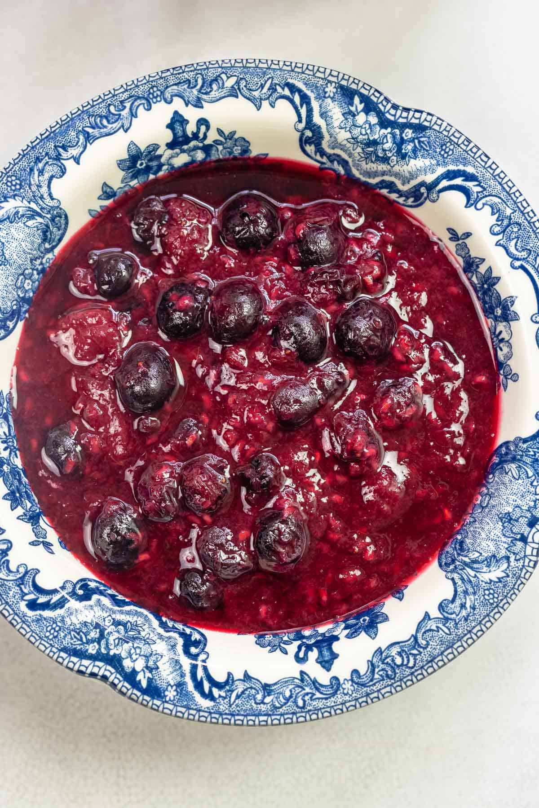

berry compote

description
a dessert originating from medieval Europe, made of whole or pieces of fruit in sugar syrup">
Ingredients
- 2 cups mixed berries (such as strawberries, blueberries, raspberries, blackberries)
- 1/4 cup sugar (adjust to taste)
- 1 tablespoon lemon juice
- 1/2 teaspoon lemon zest (optional)
- 1 tablespoon water (optional, if needed)
Instructions
Step 1: Prepare the Berries
- If using fresh berries, wash and hull them as needed. If using frozen berries, you can use them directly without thawing.
Step 2: Cook the Compote
- In a medium saucepan, combine the berries, sugar, and lemon juice.
- Cook over medium heat, stirring occasionally, until the berries release their juices and the mixture starts to thicken, about 10-15 minutes.
- If the compote is too thick, you can add a tablespoon of water to thin it out. If it's too thin, continue cooking to reduce it further.
- For extra flavor, stir in the lemon zest towards the end of cooking.
Step 3: Cool and Serve
- Remove the compote from the heat and let it cool slightly.
- Serve warm or chilled over pancakes, waffles, yogurt, ice cream, or desserts. Store any leftovers in an airtight container in the refrigerator for up to a week.